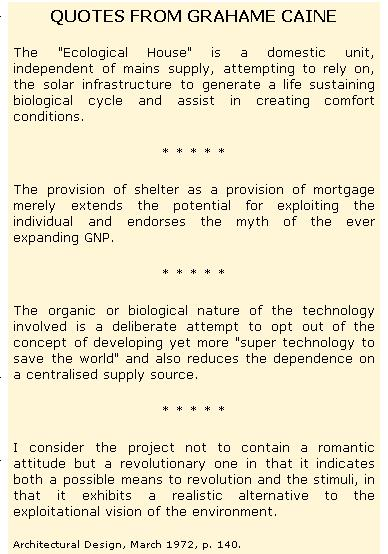
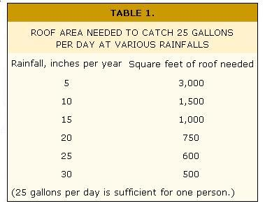

What in the world are the professions coming to? First radical lawyers, then young physicians who thumb their noses at the AMA and now a troublesome breed of architect whose avowed aim is to provide-as one of them puts it-"a realistic alternative to the exploitational vision of the environment".
The writer of those words, a young English designer named Grahame Caine, belongs to an anarchist architect group called "Street Farmer" and startled the British wing of the profession back in 1971 when he entered a competition for a housing development with a plan for a self-growing bamboo shelter. Now he's up to a new scheme that has been two years in the planning and is likely to have much more widespread applications than the bamboo effort. In fact, his current project is receiving a good deal of publicity in England (as well as a surprising amount of support from municipal authorities).
Caine's new idea is his final examination project for the Architectural Association of London, where he's a fifth-year student . . . but the structure he's erecting on the corner of an athletic field in Greenwich (for under $2,000) will also be his home for the next couple of years. This kind of testing is essential because the Caine Eco-House-unlike a conventional building-is planned as a self-contained working system that incorporates plant and animal life (Grahame's own) in harmonious interdependence. Since the 37 X 40-foot timber and plastic dwelling will include a garden that is to supply most of the householder's food, the architect-single and a vegetarian-is his own ideal guinea pig.
Grahame's principles of design-conservation of resources, independence from wasteful, dirty public power and respect for natural ecosystems-are shared by growing numbers of people in the U.S. and Canada . . . and I'd like to comment on his plans with an eye to how they might be modified for use on the North American Continent.
The plans for Grahame Caine's Eco-House are included here for clarity and interest. No one should use them exactly as they are, however . . . unless, of course, he lives next door to Grahame. If you want to build such a dwelling from scratch, you must consider the climate of your site and modify the design accordingly.
The difference of even one degree of latitude, or 1,000 feet of elevation, will affect some key points in the plan of an Eco-House. The building should be in a position to get maximum sun in cold climates, for example, but might need shelter from the heat in the South. Again, insulation will be needed to keep the house warm with minimum fuel use in the North, and cool without air conditioning in the South . . . but on an island in the tropics, insulation might be unnecessary. It all depends on where you are.
Grahame's water source-the key to his own health and the life of the greenhouse plants that will supply most of his food-is the rain that falls on his 600-square-foot roof. The notoriously damp British climate, which dumps 25 inches of precipitation on London per year, should provide Caine with about 20 gallons or so a day. This is only, about half the amount one person uses in an average home . . . but Grahame's dwelling is a long way from average. (The normal toilet, for instance, uses two gallons of water when flushed. The Caine model takes two pints.) Nevertheless, the father of the Eco-House is a realist and is installing pipes to city water as a backup "just in case" of drought.
Though the quantity of London's rain is ample for collection by householders, its quality is a drawback. Besides the sand filter that will clean the dust and impurities from his water supply, Grahame is considering more sophisticated devices to remove some of the high lead content of the precipitation from a dirty urban sky.
In a cleaner area, though, rainwater may well be freer of pollution than well water. Caine's method of supplying himself with water also has other advantages worth considering. For one thing, rain is sure to be more pleasant to the taste than chlorinated city water, an-as generations of farm women know-it's very soft and excellent for washing everything from hair to the family laundry.
Is reliance on rainwater practical in North America? Clearly, that depends on the area, since rainfall on this continent varies from 80 inches annually on the extreme West Coast to less than 5 inches in the deserts. If you're considering rainwater for your own household use, find a precipitation map in your nearest library and check the average yearly figure for your location. If it's more than 30 inches, the supply is ample . . . if it's less than 5, give up the idea.
How much water you can gather depends, of course, on how big a surface you have to catch it. In Table 1 I've set out the area of roof needed to supply one person with 25 gallons of water per day for various rainfalls ranging between 5 inches and 30 inches annually. This is much less than an average individual uses . . . but then, our pioneer ancestors got by with bucketing 5 gallons a day each, and there's no reason why we can't limit our consumption with a little care.
The water supply, as it comes from the roof, should pass into a setup that allows the first few gallons to run away after washing the collecting surface clean. What's gathered thereafter should go through a sand filter-to remove any dust washed out of the atmosphere-and then into a storage tank with an outflow that sends the water through an activated charcoal purifier before use.
To store enough water to supply four people for 60 days (a surplus that allows for two months with hardly any rain) you'll need an 800-cubic-foot vessel. Probably the most practical form is a concrete tank in the ground. A rectangular container 9 X 9 X 10 feet would do, and so would a cylinder 10 feet in diameter and 10 feet deep.
A single use for kitchen or bathroom purposes is all the conventional household gets out of any one gallon of water. In a home like Grahame's, though, that's just the beginning . . . and what happens to the used fluid, and the other normal "wastes", is the most unusual feature of a very unusual house.
All the waste water from Grahame's kitchen and bathroom, as well as all organic solid wastes, are passed on to an ingenious system that converts the material to methane gas for cooking fuel and liquid nutrients for the greenhouse.
As Figure 2 shows, the wastes first enter a two-compartment (one mainly for solid fuel, the other for liquids only) digester. The double container resembles an ordinary septic tank, with two important differences. First, Grahame's version is airtight to provide a happy home for the bacteria that convert part of the raw sewage and garbage into methane. Also, since the optimum temperature for the gas-producing bugs is between 70° and 95° Fahrenheit, the receptacle is insulated and equipped with a solar heating panel. (For more details on methane production by anaerobic bacteria, see THE MOTHER EARTH NEWS, NOS. 3, 12 and 18.)
The material from the liquid compartment in the digester next passes to another tank . . . this time airy and sunlit to accommodate the tiny, fast-multiplying algae plants that devour organic matter still in the waste. The algae also add oxygen that helps bacteria digest the sewage and nitrogen that enriches the end product (which eventually becomes plant food). Also, any dangerous microorganisms in the human excreta portion of the sewage should perish at this stage, killed by the oxygen and the ultraviolet radiation of the sun.
Since the algae need warmth, as well as light and air, Grahame will keep them comfortable in the dull, cold London winter by extending part of their tank into his house in the form of a loop. This indoor section of the algae pool is to be continuously illuminated with electric light (only 500 foot-candles are needed, so one 40-watt fluorescent tube should suffice).
When the plants have done their work, the liquid passes on-algae and all-to a final tank . . . another digester in which the contents are kept at 110° F by means of a solar panel. This temperature kills the algae (which are soon replaced by the fast-growing colony in the open pool) and decomposes them to furnish more methane.
The gas from the first and second digesters collects in the tops of the tanks and is piped to Grahame's kitchen stove . . . which will also have cylinders of store-bought fuel standing by, since the young designer has no illusions about how much methane a single person's wastes can produce. To be precise, some large sewage-disposal outfits (which use methane to run their power plants) count on one cubic foot of gas from each individual's daily wastes. Though Grahame expects to do better than that-since he'll be using kitchen garbage as well as sewage-he certainly won't be able to heat the house, run an electric generator or fuel a car from his output. He'll be lucky if he gets enough to cook with. A family or commune, of course, would produce more methane and would also use it more efficiently, since approximately the same amount of fuel goes into cooking one potato or ten.
And what about the liquid that remains in the second digester after the methane is piped off? That's Grahame's plant food . . . his replacement for the mixture of commercial fertilizers that's normally used in hydroponic gardening. If Caine finds that he can rely on the algae pool to free his personal wastes of harmful bacteria before the sewage is passed on to the greenhouse, he'll have attained one of his ideals: a complete cycle of organic material based on the interaction of plant and animal life as it occurs in nature.
As you may know, waste-recycling dwellings are being attempted in our own country (see "Grassy Brook Village" in LIFESTYLE! NO. 2 for a description of one such effort). The main difficulty is keeping the digester tanks at their correct temperatures, since they might overheat in the southern summer and-though they generate some heat of their own-require protection and added warmth in the cold North. (One possible solution is to surround the tank with a warm-water jacket.) Anyone who imitated Grahame's use of an algae pool in a severe climate would also have to take extra measures to keep the plants alive during the winter.
The cycle of organic material in Grahame's ecosystem is completed in a 500-square-foot greenhouse next to Caine's own living space. Here the vegetables the young architect will rely on for his main food source, and the flowers he's planting among them just for fun, will be raised hydroponically with household wastes for their fertilizer. (This inventive Englishman has even planned a hothouse-above the main growing space to catch the rising heat-where he intends to cultivate bananas and other tropical fruit.)
Hydroponics, as it's usually practiced, is the antithesis of organic gardening because the plants live in an inert medium like sand and are nourished entirely by a water solution that contains plant food. The technique-though valuable in lab studies of plant nutrition-is seldom used commercially except sometimes to produce fine chrysanthemums and other flowers. Because my own feeling is that organically grown food tastes better than hydroponic products, I'd be interested to know whether Grahame obtains any improvement in flavor by watering the plants with natural instead of synthetic fertilizers . . . an innovation that brings these two schools of gardening a step closer together.
In any case, people who have no soil-because their land is hard rock, too full of moisture or otherwise not tillable-could certainly grow their food by Grahame's method where an organic garden would be impossible.
Grahame expects 250 square feet of cultivated space in his greenhouse to provide him with eight pounds of vegetables per square foot . . . enough to feed him all year round with no trouble. I myself question the need for so much indoor growing area, because in most cultivated regions an outdoor garden will produce enough of many vegetables (potatoes, for instance) to last the winter. On the other hand, the greenhouse does allow controlled growing conditions and more efficient recycling of waste . . . and this is probably important in a demonstration project like the Eco-House.
If you want to follow Grahame's example and grow all your own food under shelter, you'll need to work out the space requirements carefully. For instance, a family of four would require 1,000 square feet of greenhouse space. A structure, let's say, 20 X 50 feet . . . which is perfectly practical now that large plastic sheets are cheap and readily available.
Your local climate, however, may force you to make some alterations in the greenhouse project. While a solar-heated growing area is practical all year round in England, the extremely cold winters of the Northern States and Canada would require artificial heat for the plants during the coldest months of the year. Certainly, it would be difficult to make Caine's overhead hothouse work when the outdoor temperature is zero. (New Alchemy Institute East - located on Cape Cod - is experimenting with winter indoor growing environments that also incorporate fish and animals. See LIFESTYLE! .NO. -MOTHER.)
Naturally, Grahame will have to keep himself warm, as well as his plants, and he'll need hot water for household use. He plans to fill both these needs-partly, anyhow-by trapping the heat of the sun in an array of black-painted hot-water radiators (the kind that are used for central heating) on the south wall of his dwelling . . . though it seems to me that a 100-foot coil of black plastic pipe would be simpler, cheaper and lighter. While an April test run for this system produced a hot-bath temperature of 140° F in a 30-gallon tank of water, this result can't be hoped for in winter, especially during the long gloomy periods which are common in England. Therefore, Caine is hooking into the public electricity supply as a backup source of heat until he gets started making his own power.
And how about using Grahame's hot-water system in this country? Well, in the South, of course, his form of solar heating is perfectly practical . . . and even in the North, on a bright day in January or February, the sun can feel very warm in a sheltered spot. Apart from the fact that such bright days are none too common in some parts of the country, though, the difficulty is the coldness of the air. The radiators could, of course, be placed behind a screen which would allow them to collect the sun's heat without losing to the air more warmth than they gain . . . but, even so, there's still the problem of keeping the water from freezing overnight. Still, as the article on "Grassy Brook Village" in LIFESTYLE! NO. 2 shows, solar heating-in a somewhat different form-is being attempted in the cold climate of Vermont.
Grahame is using public-utility electricity at the outset to light his Eco-House and-as I've said-to help his radiator array on cold days. Eventually, however, he hopes to install a wind generator and power-storage system to make the house independent of the electric grid and fossil fuels.
When he does undertake this project, I'll be interested to know how he tackles the problem of storing energy for windless days. This is the difficulty that every user of alternative power runs into. To show you its dimensions, I'll use my own house for an example, even though I don't heat electrically: Just 1,000 square feet of old farmhouse-well insulated-needs the equivalent of 20 kilowatts of heat during the coldest days of winter. Now, to store 20 kilowatts as electricity for one hour would require 20 car batteries . . . and, to provide for three consecutive windy days, you'd need 1,440 of the storage units!
In short, there's a great reward coming to anyone who devises a practical, light, small energy store. The standard car battery holds about 1 kilowatt-hour or 1-1/3 horsepowerhours. What we need is a device that will cost no more, occupy the same space and contain at least 10 and preferably 100 kilowatt-hours.
Since no such device now exists, though, let's look at some of the alternatives Grahame might use when he undertakes to make his own power.
Grahame could-for instance-use the windmill's energy to heat water to a temperature of 80° to 180° F, by means of a 20-kilowatt immersion heater that's made for this purpose. Power stored in this form won't light Caine's house, but it will give him heat. How long it will do so depends on the volume of his storage area. A tank of 125 cubic feet will hold 230 kilowatt-hours . . . one of 500 cubic feet, nearly 1,000 kilowatt-hours . . . and a container of 800 cubic feet (10 X 10 X 8 feet) will retain enough warmth to keep a house the size of mine comfortable in the depth of winter for three days.
In many ways, water is an attractive heat store. It's safe, and-in most areas-it's cheap and plentiful. What's more, it can act as its own pump and will heat the radiators in a house by thermosiphoning. However, it does have a couple of drawbacks: It's bulky, and it won't store heat above water's boiling point. (If you hold power as steam under pressure, the Man will-rightly-send his inspector 'round to see that your "pressure vessel" isn't a danger to you or to innocent bystanders.)
Sand, used as a heat store, can outperform water by holding a much higher temperature . . . but bulk for bulk it will retain only half as much warmth. What's more, it won't flow. To get the heat into the sand in the first place, then, Grahame would need something more complex than a common immersion heater, and he'd also have to devise a network of pipes or the like to get it out. In short, I'm dubious about the sand storage idea in practice.
Well, as you can see, it's quite a challenge to overcome the sporadic nature of wind power and turn its energy into a reliable household servant. Still, Grahame Caine is an inventive man, and maybe his solution to the power-storage problem will be as novel as his use of algae in the Eco-House's waste-recycling system. This, and the other ideas he'll be working on during his life on that corner of land in Greenwich, may go a long way toward freeing us all from the cumbersome wastefulness that's built into modern housing.
Many of us think a new kind of housing design is long overdue in our society . . . and, to judge from the response Grahame's been getting from official circles in London, at least some urban authorities are worried enough to agree. Just possibly, then, the Caine Eco-House may turn out to be one revolutionary idea that came along at exactly the right time.
|
 |
 |
|